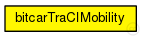
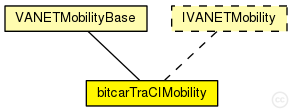

This documentation is released under the Creative Commons license
This documentation is released under the Creative Commons licenseUsed in modules created by the bitcarTraCIScenarioManager.
This module relies on the bitcarTraCIScenarioManager for state updates and can not be used on its own.
See the Veins website for a tutorial, documentation, and publications .
Author: Christoph Sommer, David Eckhoff, Luca Bedogni, Bastian Halmos
See also: bitcarTraCIScenarioManager
See also: bitcarTraCIScenarioManagerLaunchd
The following diagram shows usage relationships between types. Unresolved types are missing from the diagram. Click here to see the full picture.
The following diagram shows inheritance relationships for this type. Unresolved types are missing from the diagram. Click here to see the full picture.
| Name | Type | Description |
|---|---|---|
| VANETMobilityBase | simple module |
Abstract base module for mobility models. |
| Name | Type | Default value | Description |
|---|---|---|---|
| constraintAreaMinX | double | -1m/0 |
min x position of the constraint area, unconstrained by default (negative infinity) |
| constraintAreaMinY | double | -1m/0 |
min y position of the constraint area, unconstrained by default (negative infinity) |
| constraintAreaMinZ | double | -1m/0 |
min z position of the constraint area, unconstrained by default (negative infinity) |
| constraintAreaMaxX | double | 1m/0 |
max x position of the constraint area, unconstrained by default (positive infinity) |
| constraintAreaMaxY | double | 1m/0 |
max y position of the constraint area, unconstrained by default (positive infinity) |
| constraintAreaMaxZ | double | 1m/0 |
max z position of the constraint area, unconstrained by default (positive infinity) |
| accidentCount | int | 0 |
number of accidents |
| accidentStart | double | uniform(30s,60s) |
time until first accident, relative to departure time |
| accidentDuration | double | uniform(30s,60s) |
duration of accident |
| accidentInterval | double | uniform(30s,60s) |
time between accidents |
| Name | Value | Description |
|---|---|---|
| display | i=block/cogwheel | |
| class | bitcarTraCIMobility |
| Name | Type | Unit |
|---|---|---|
| mobilityStateChanged | VANETMobilityBase |
// // Used in modules created by the bitcarTraCIScenarioManager. // // This module relies on the bitcarTraCIScenarioManager for state updates // and can not be used on its own. // // See the Veins website <a href="http://veins.car2x.org/"> for a tutorial, documentation, and publications </a>. // // @author Christoph Sommer, David Eckhoff, Luca Bedogni, Bastian Halmos // // @see bitcarTraCIScenarioManager // @see bitcarTraCIScenarioManagerLaunchd // simple bitcarTraCIMobility extends VANETMobilityBase like IVANETMobility { parameters: @display("i=block/cogwheel"); int accidentCount = default(0); // number of accidents double accidentStart @unit("s") = default(uniform(30s,60s)); // time until first accident, relative to departure time volatile double accidentDuration @unit("s") = default(uniform(30s,60s)); // duration of accident volatile double accidentInterval @unit("s") = default(uniform(30s,60s)); // time between accidents @class(bitcarTraCIMobility); }
This documentation is released under the Creative Commons license